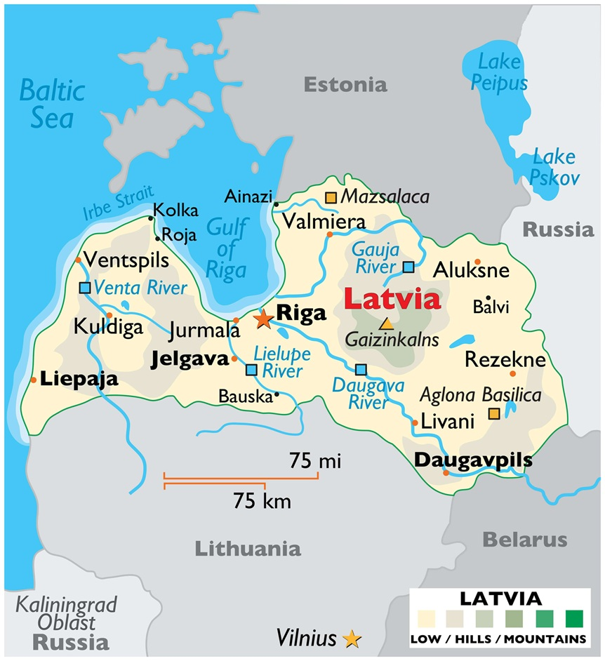

Average Yearly Temperatures
| Seasons | Wnter (Dec-Feb) | Spring (Mar-May) | Summer (Jun-Aug) | Autumn (Sep-Nov) |
|---|---|---|---|---|
| Day | 5° to 11° C | 6° to 30° C | 10° to 34° C | 7° to 31° C |
| Night | -34° to -16° C | -26° to -5° C | 0° to 23° C | -5° to 25° C |

Nearby Airports
| Airport | Vilnius (VNO) | Riga (RIX) | Kaunas (KUN) |
|---|---|---|---|
| Distance | 159 km | 196 km | 186 km |